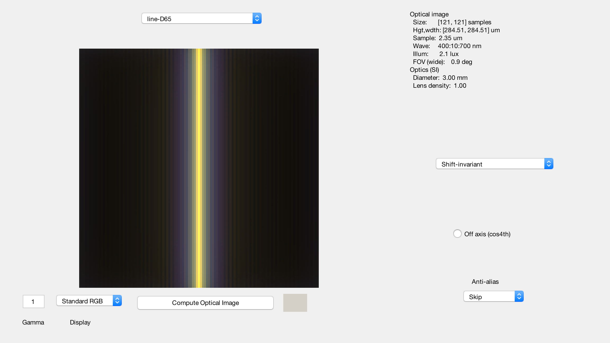
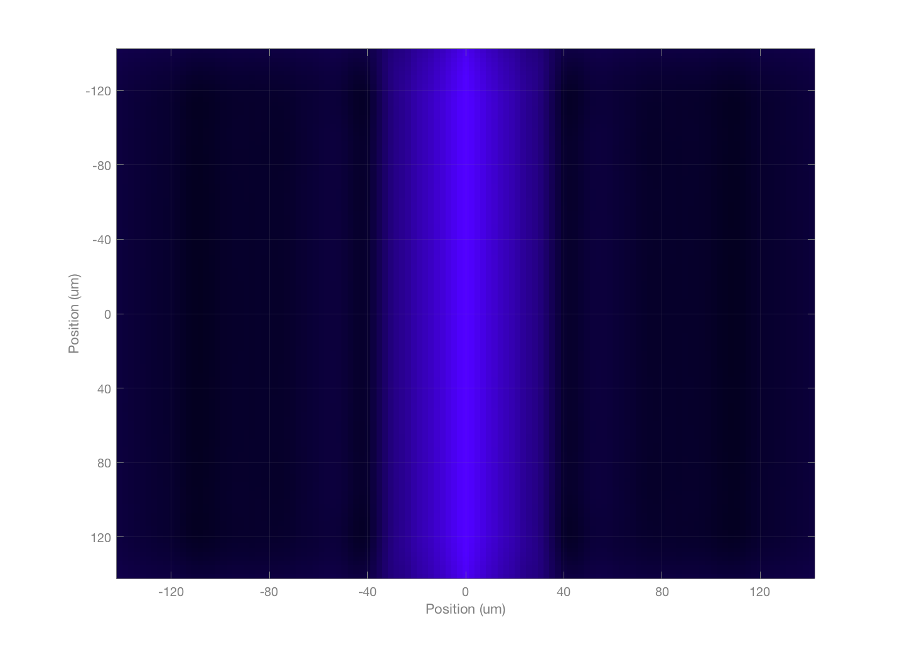
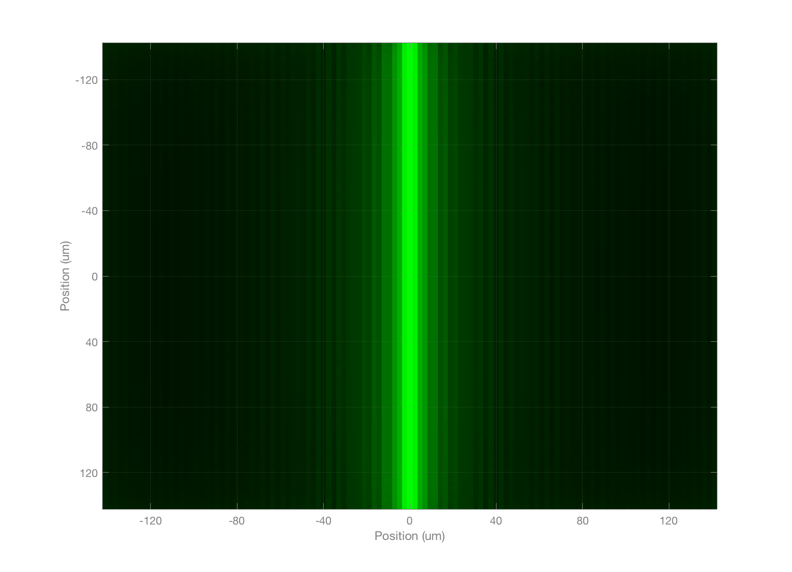
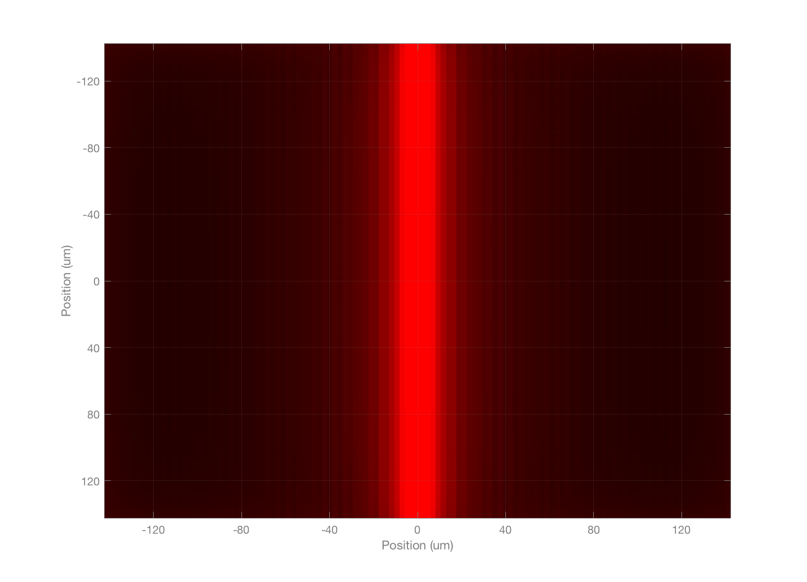

Contents
t_humanLineSpreadOI
Illustrate the retinal irradiance of a line stimuli at different wavelengths.
Copyright ISETBIO Team, 2015
% Initialize
ieInit;
Create a line scene, human optics, and a human sensor
This is a broad band stimulus, with a spectral power distribution of daylight, 6500 K. We set the field of view to one degree.
lineS = sceneCreate('line d65',128); lineS = sceneSet(lineS,'h fov',1); % The optics are the estimated human optics, as per Marimont and Wandell in % the mid-90s. We could (and should) illustrate this using some of the more % recent wavefront aberration data. oi = oiCreate('human');
Compute and display the broad band
oi = oiCompute(lineS,oi); % Get rid of the surrounding area with the image mean. This makes the % visualization a little nicer, and we are only interested in the center % part anyway. oi = oiCrop(oi,[20 20 120 120]); vcAddObject(oi); oiWindow('scale',true); roi = []; wList = [450, 550, 650]; % nm gSpacing = 40; % microns for ww = 1:length(wList) thisWave = wList(ww); oiPlot(oi,'irradiance image wave grid',roi,thisWave,gSpacing); end
10 nm band assumed 10 nm band assumed 10 nm band assumed   